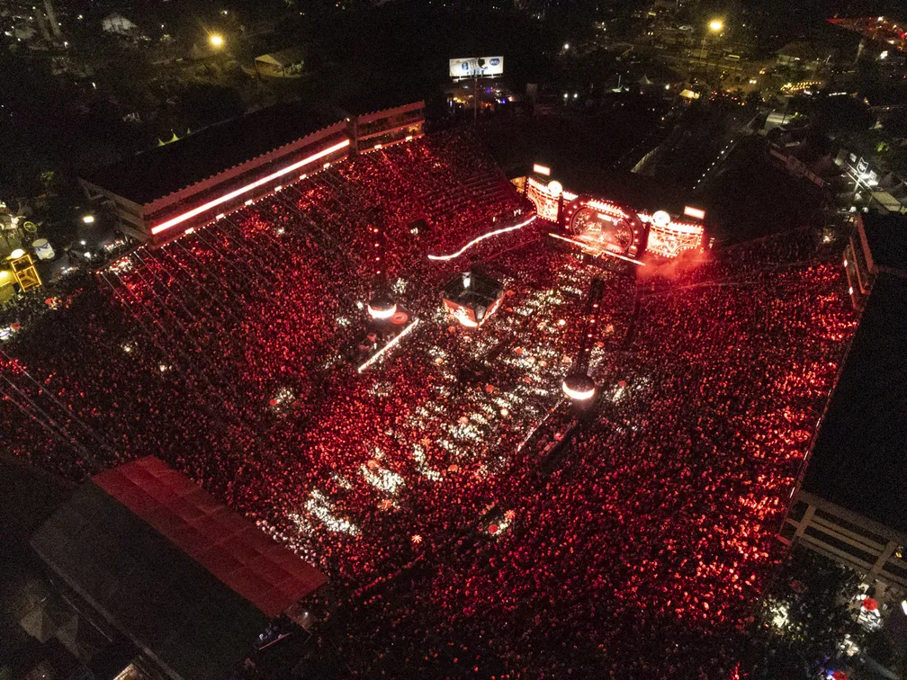
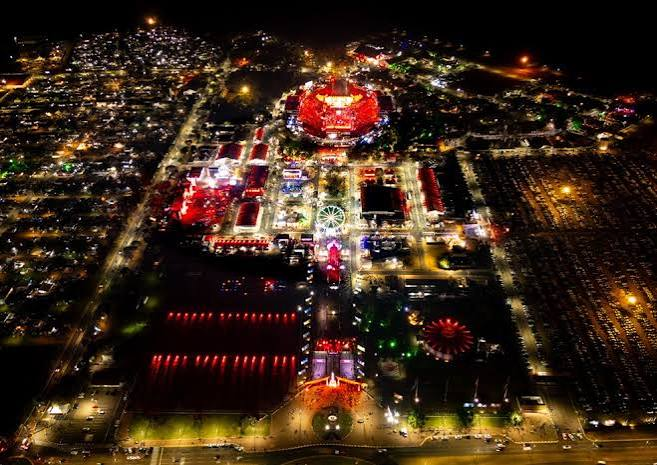

Energia da Porteira
Passe o mouse para abrir o brete e soltar a adrenalina na arena de Barretos.
Painel dos 8 Segundos
Monitore e conte quantas montarias de sucesso pararam no touro na arena principal.
0
Alerta dos Comissários
Abra o pergaminho oficial para ver as regras da queima do alho.
Registros de Barretos
Clique nas fotos para expandir os melhores momentos da Festa do Peão.

